Quickstart Guide
Get up and running with Gorgonetics in a few minutes. No genome file required — the app comes with demo data to explore.
Launch the App
When you open Gorgonetics for the first time, it loads demo pets and gene templates automatically. You'll see two sample pets in the left sidebar — a BeeWasp and a Horse — ready to explore. No import needed.
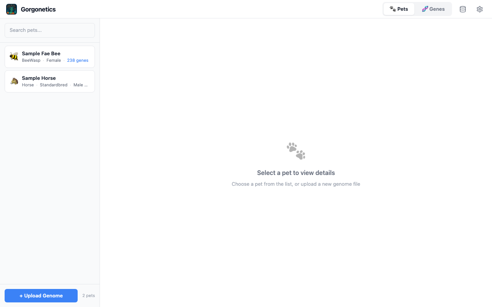
Browse Your Pets
The app opens on the Pets tab. The left sidebar lists all your pets with their species, gender, and gene count. Click any pet card to select it and view its genome in the main panel.
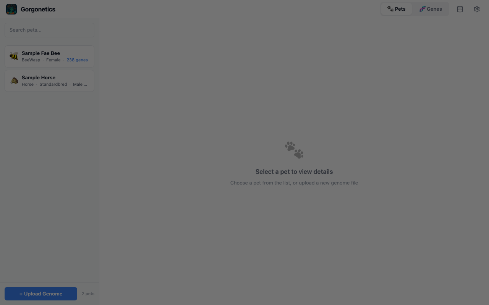
Hover over a pet card to reveal the edit (pencil) and delete (×) buttons. Edit lets you change the pet's name, gender, breed, and attributes.
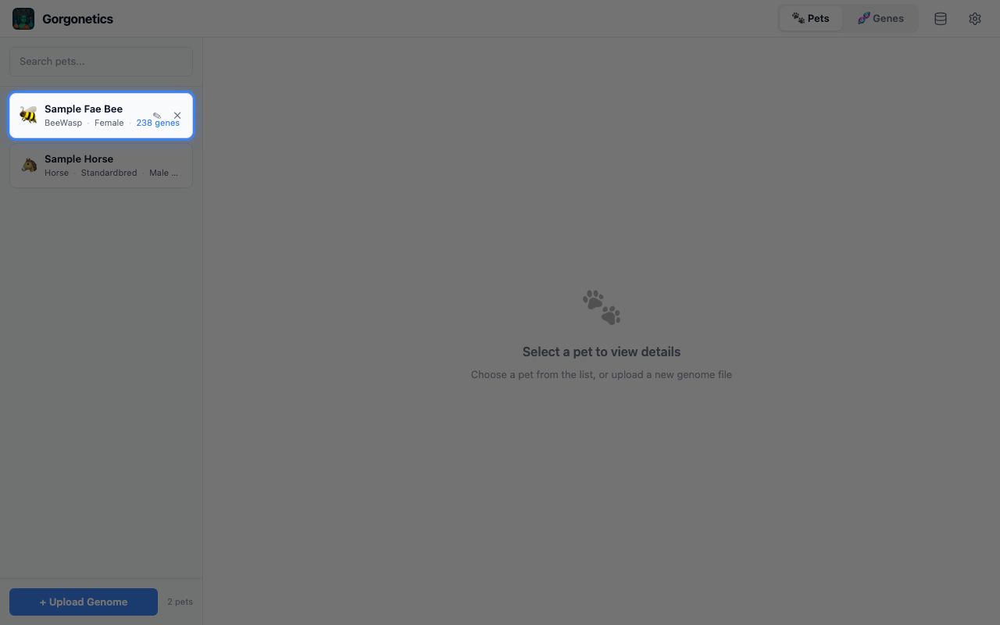
Upload a Genome
Click the "+ Upload Genome" button at the bottom of the pet list. Select a .txt genome file exported from Project Gorgon. The pet appears in your list immediately.
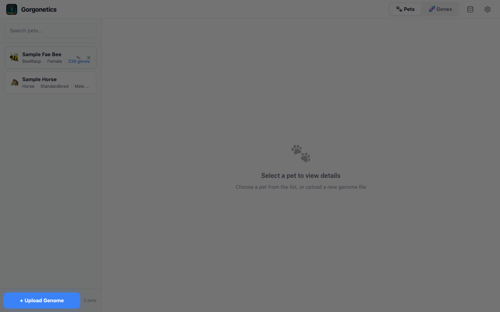
.txt files from the gameRead the Gene Grid
Click a pet to see its gene visualization grid. Each dot represents a single gene, organized by chromosome (rows) and position (columns). The colors and patterns encode what each gene does.
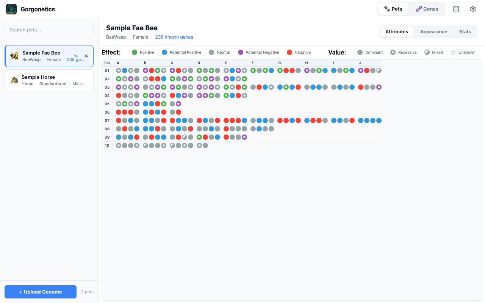
Gene Dot Legend
Gene Type
Inspect Individual Genes
Hover over any gene dot to see a tooltip with detailed information: the gene's ID, whether it's Dominant (D) or Recessive (R), and its current effect. This is the quickest way to understand what a specific gene is doing.
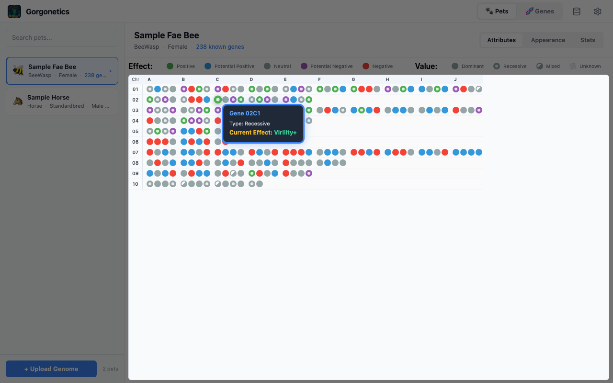
Switch Views & Check Stats
Use the buttons in the top-right corner to switch between views:
- Attributes — colors genes by gameplay attributes (Toughness, Intelligence, etc.)
- Appearance — colors genes by visual traits (body color, wing scale, etc.)
- Stats — opens the stats panel showing a summary of attribute counts and positive/negative breakdowns
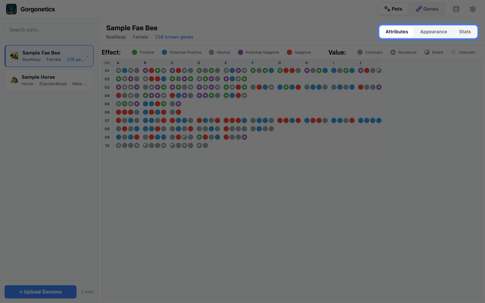
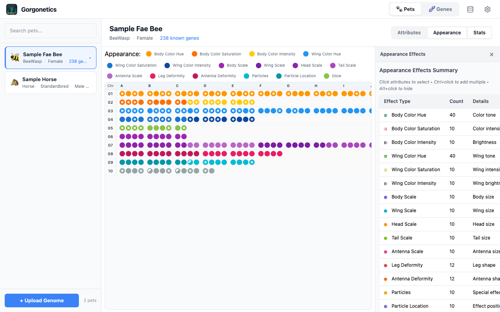
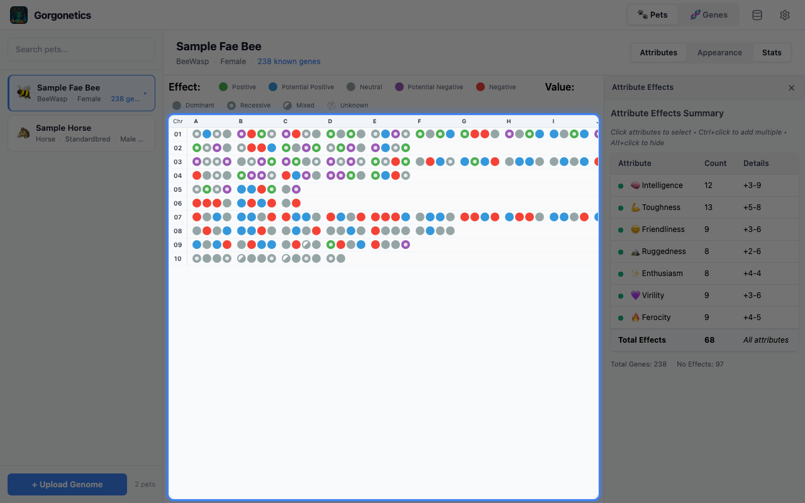
The stats table is interactive — click any attribute row to filter the gene grid down to just that attribute's genes. Everything else dims out so you can see exactly where those genes sit across the chromosomes.
- Click an attribute to select it and filter the grid
- Ctrl+click to select multiple attributes at once
- Alt+click to hide a specific attribute instead
- Click the selected attribute again to clear the filter
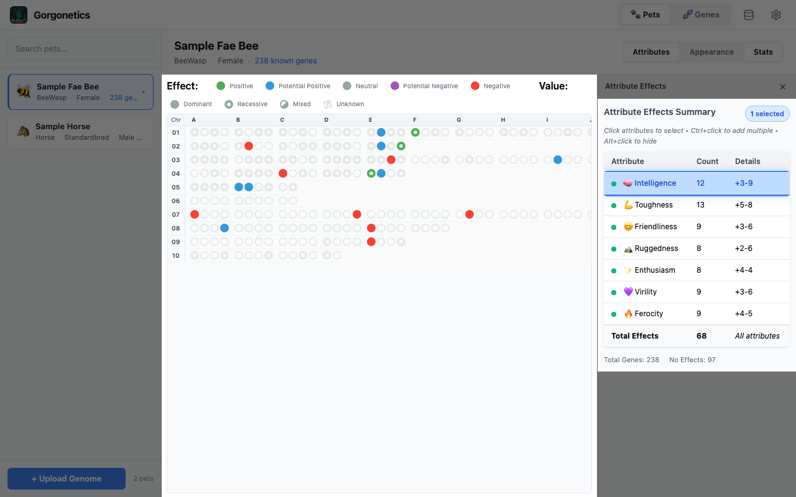
Horse Breed Filtering
When viewing a Horse pet, breed filter buttons appear above the gene grid. If the pet has a known breed, an Auto button activates automatically — filtering genes to that breed and greying out the manual buttons. Click Auto to toggle it off and choose a different breed manually.
- Auto (green) — automatically filters to the pet's breed. Manual buttons are disabled.
- Toggle Auto off — clears the filter and re-enables manual breed selection (All, St, Kb, etc.)
- You can control whether Auto is on by default in Settings (gear icon in the top bar)
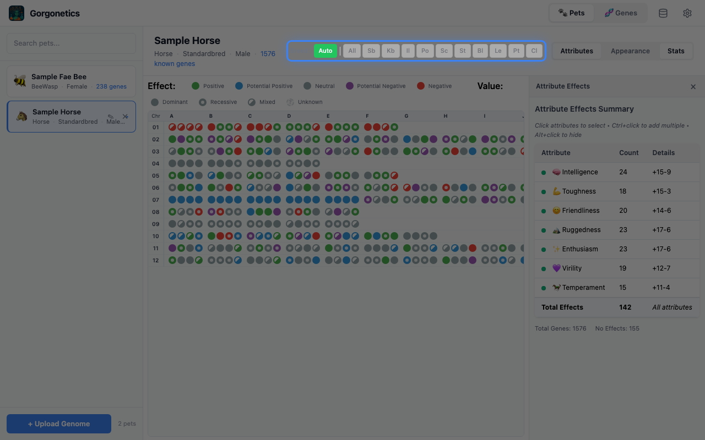
Edit Gene Effects
Switch to the Genes tab using the button in the top bar. The sidebar shows dropdowns to select an animal type and chromosome.
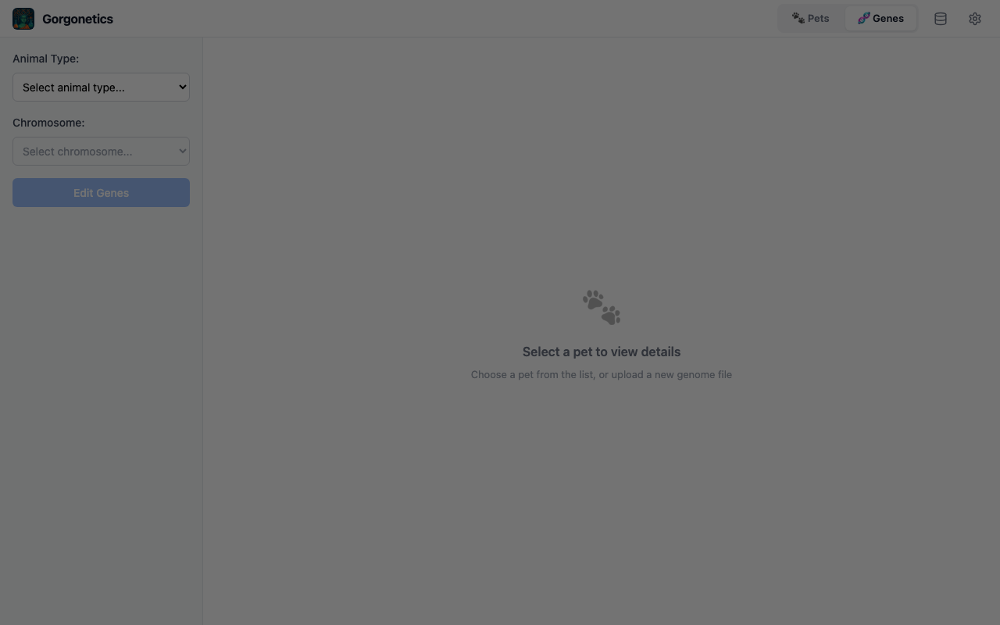
After clicking "Edit Genes", a table appears with every gene in that chromosome. Use the dropdowns to set the dominant and recessive effects, then click "Save All Changes".
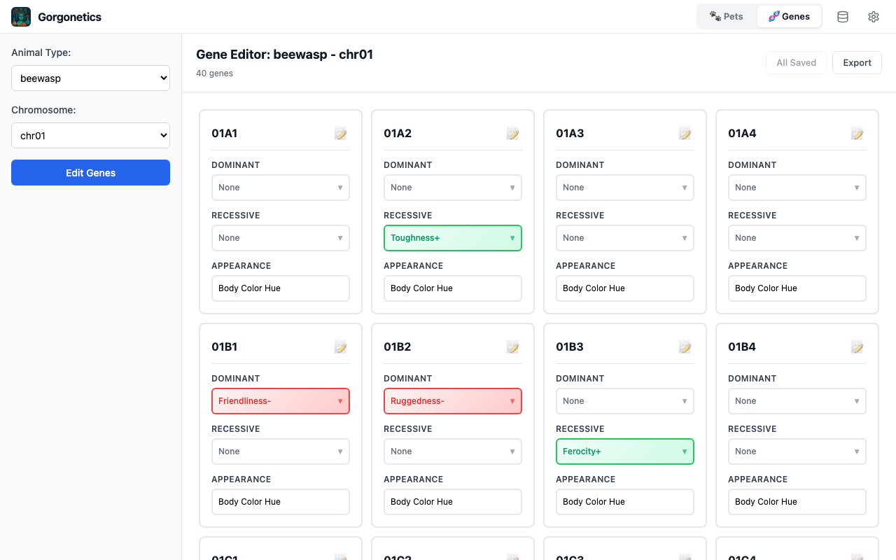
Back Up & Restore Your Data
Click the database icon in the top bar to open the data management menu. From here you can export your entire database or import a backup.
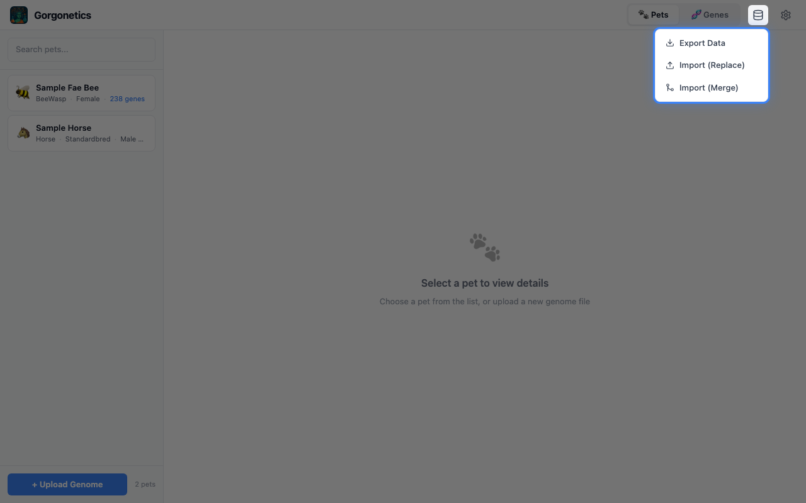
- Export Data — saves all your pets and gene definitions to a
.jsonfile. Use this to create regular backups. - Import (Replace) — clears all existing data and restores from a backup file. A confirmation dialog warns you before proceeding.
- Import (Merge) — adds new pets from the backup without removing existing ones. Pets with the same genome are skipped; gene definitions are updated.
Settings
Click the gear icon in the top bar to open the Settings panel. Here you can customise how the app behaves.
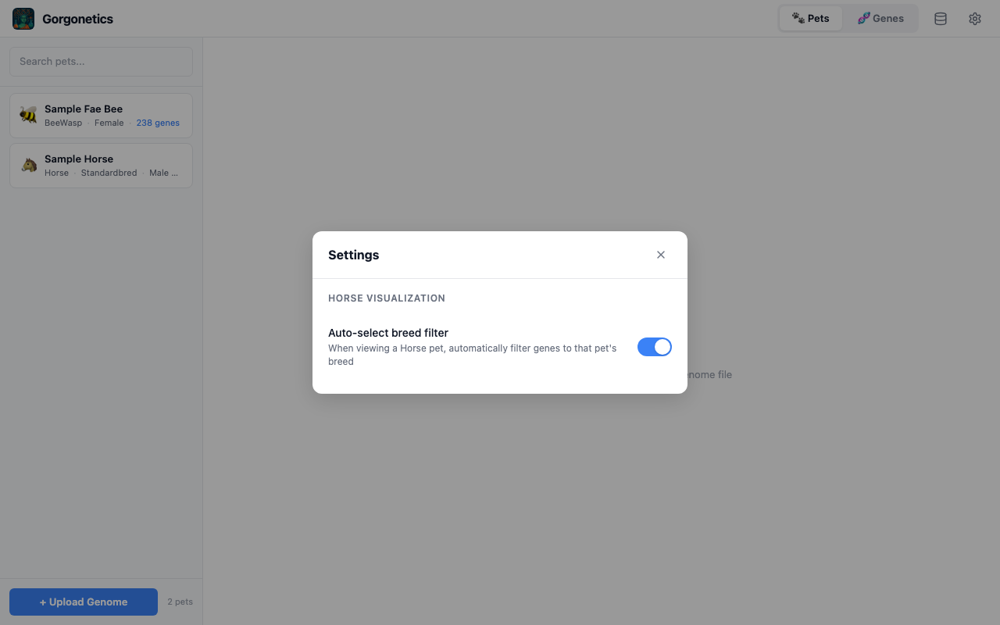
Current settings:
- Auto-select breed filter — when enabled (default), viewing a Horse pet automatically activates the breed filter for that pet's breed. Toggle off if you prefer to always start with "All" breeds visible.